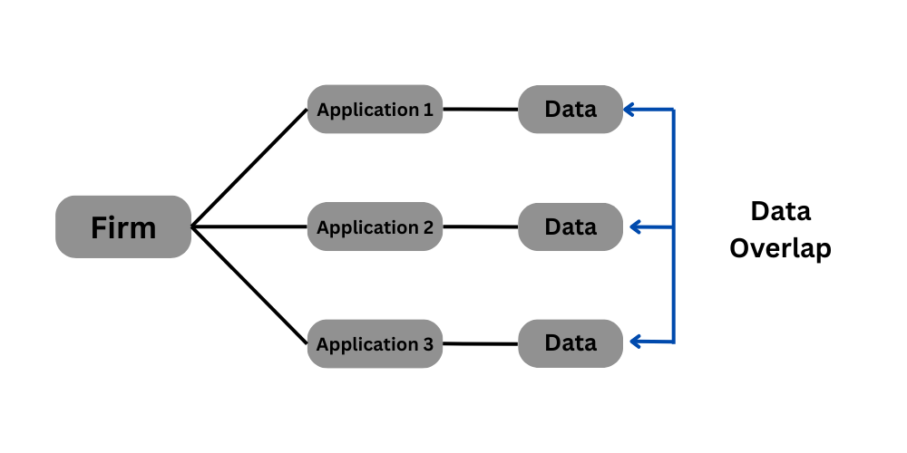
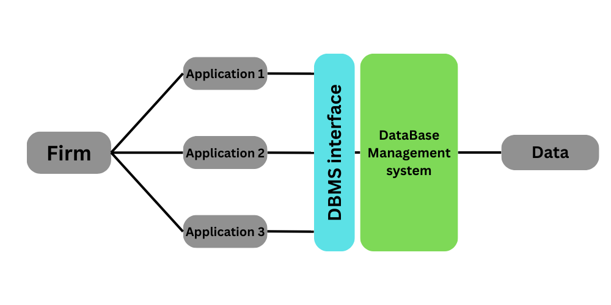
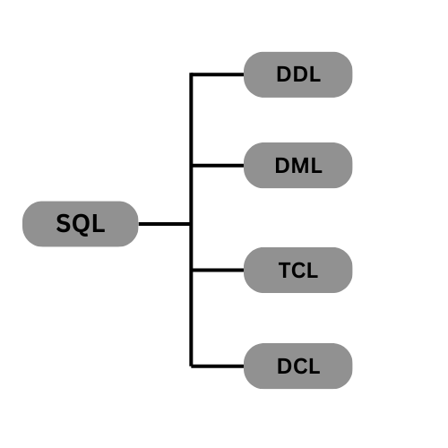

A Database Management System (DBMS) is software that manages and controls the way data is stored, organized, and retrieved in a database. It provides tools for creating, defining, manipulating, and managing databases, allowing organizations to efficiently store, retrieve, and manage large amounts of data.
As shown in the picture above, multiple applications from the same firm may access overlapping data. If you're editing information in one database and a power outage occurs, other databases could be affected due to inconsistencies. This is why a Database Management System (DBMS) is essential—it helps ensure data integrity, minimizes redundancy, and optimizes storage and access to shared data. (See picture below)
In this course we first learn about the DBMS interface first.
A Database Management System (DBMS) is typically accessed using Structured Query Language (SQL), which allows users to interact with and manage the data. SQL provides several types of commands to perform various operations on the database. The four main categories of SQL commands are:
In this section, we will cover Data Definition Language (DDL); the remaining SQL command types will be discussed later.
Before starting with different types of commands we define some keywaords first: